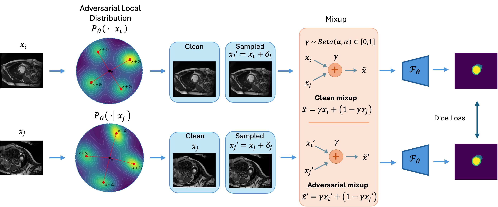
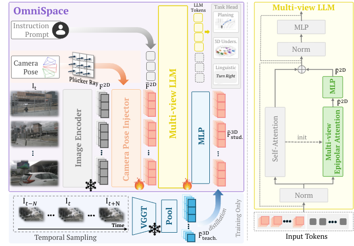
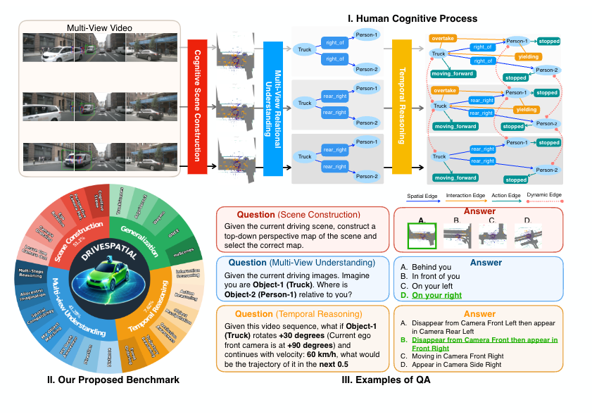
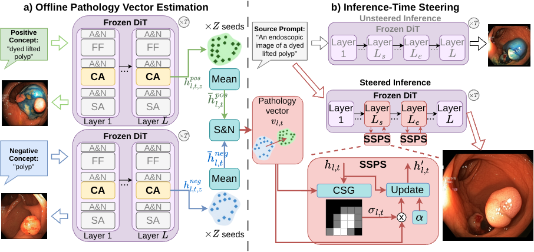
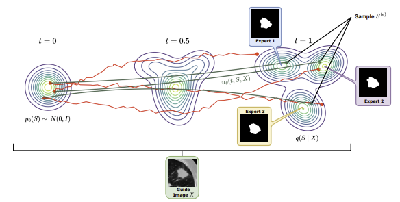

Cross-Adversarial Local Distribution Regularization for Semi-supervised Medical Image Segmentation
Submitted to Medical Image Analysis (MedIA), 2026.
I am a Master's student at the University of Arkansas, Fayetteville, advised by Prof. Ngan Le. I study multimodal, semi-supervised, and in-context learning for computer vision, with applications in medical image analysis, autonomous driving, and robot learning. My work has appeared at MICCAI, Medical Image Analysis (MedIA), and NeurIPS.
Before that, I obtained my B.Sc. at VNU University of Engineering and Technology in 2025, working with Dr. Tran Quoc Long.
Fayetteville, AR, USA
Two papers accepted at NeurIPS 2026.
Preprint released: Cross-Adversarial Local Distribution Regularization for Semi-supervised Medical Image Segmentation.
Our accepted paper has been selected as a spotlight paper at MICCAI 2026.
Paper accepted at MICCAI 2026 (early accept).
Started my Master's degree at the University of Arkansas, USA, advised by Prof. Ngan Le.
I graduated with a B.Sc. in Artificial Intelligence from VNU University of Engineering and Technology, Vietnam.
Paper accepted at UNSURE 2025 (MICCAI Workshop).
My research focuses on multimodal, semi-supervised, and in-context learning for computer vision, with applications in medical image analysis, autonomous driving, and robot learning. I am interested in how models can integrate information across modalities, learn from limited labeled data, and adapt to new tasks through context.

Submitted to Medical Image Analysis (MedIA), 2026.

* Equal Contribution.
Advances in Neural Information Processing Systems (NeurIPS), 2026.
@inproceedings{2026omnispace,
author = {Vo, Hao and Nguyen, Phu Loc and Vo, Khoa and Tran, Sieu and Nguyen, Duc Minh and Cuong, Ngo Xuan and Bui, Nghi D. Q. and Nguyen, Anh and Nguyen, Duy Minh Ho and Le, Ngan},
year = {2026},
title = {OmniSpace: Efficient Geometry Awareness for Autonomous Vehicles MLLMs},
booktitle = {Advances in Neural Information Processing Systems (NeurIPS)}
}
Advances in Neural Information Processing Systems (NeurIPS), 2026.
@inproceedings{2026drivespatial,
author = {Vo, Hao and Vo, Khoa and Nguyen, Phu Loc and Tran, Sieu and Nguyen, Duc Minh and Cuong, Ngo Xuan and Gawugah, Gladys and Godavarthi, Sreevenkata Anjani Tishita and Rainwater, Chase and Bui, Nghi D. Q. and Nguyen, Anh and Nguyen, Duy Minh Ho and Le, Ngan},
year = {2026},
title = {DRIVESPATIAL: A Benchmark for Spatiotemporal Intelligence in VLMs for Autonomous Driving},
booktitle = {Advances in Neural Information Processing Systems (NeurIPS)}
}
Medical Image Computing and Computer Assisted Intervention (MICCAI), 2026 — Spotlight.
@inproceedings{2026medsteer,
author = {Pham, Trong-Thang and Nguyen, Phu Loc and Nguyen, Anh and Nguyen, Hien and Le, Ngan},
year = {2026},
title = {MedSteer: Counterfactual Endoscopic Synthesis via Training-Free Activation Steering},
booktitle = {Medical Image Computing and Computer Assisted Intervention (MICCAI)},
note = {Spotlight}
}
UNSURE 2025 (MICCAI Workshop). Proceedings: Lecture Notes in Computer Science, vol. 16166, Springer, 2026.
@inproceedings{2026aleatoric,
author = {Nguyen, Van Phi and Trinh, Ngoc Huynh and Nguyen, Duy Minh Lam and Nguyen, Phu Loc and Tran, Quoc Long},
year = {2026},
title = {Aleatoric Uncertainty Medical Image Segmentation Estimation via Flow Matching},
booktitle = {Uncertainty for Safe Utilization of Machine Learning in Medical Imaging (UNSURE), MICCAI Workshop},
series = {Lecture Notes in Computer Science},
volume = {16166},
publisher = {Springer, Cham},
doi = {10.1007/978-3-032-06593-3_13}
}